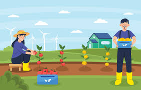
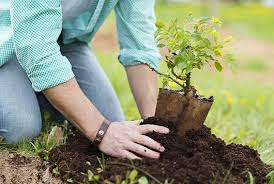
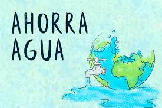
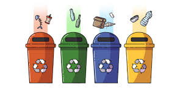
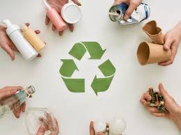

Que puedo hacer para cuidar el Medio Ambiente?
¡El planeta Tierra está en peligro y necesita nuestra ayuda! La contaminación, la deforestación y la pérdida de biodiversidad han aumentado excesivamente.
Quizá te has preguntado ¿qué puedes hacer para ayudar? Aquí te compartimos 6 tareas sencillas para empezar con el cambio, ponerlos en práctica no requiere de mucho esfuerzo, únicamente se necesita estar comprometida y comprometido:
1-.Cosecha tus propios alimentos.
Los productos ecológicos generan menos contaminación ambiental ya que no se utilizan fertilizantes. Te recomendamos realizar un huerto en casa, de esta manera disfrutarás alimentos frescos y llenos de nutrientes.

2-.Planta de Arboles.
Los árboles son esenciales para el mundo, producen oxígeno, reducen el dióxido de carbono, absorben gases contaminantes, regulan la temperatura, entre otros beneficios. Así que ya sabes, planta un árbol y contribuye al cuidado del medio ambiente.

3-.Ahorra el agua.
El agua es un recurso imprescindible y escaso que debemos usar con responsabilidad. Cerrar el grifo mientras te lavas los dientes, bañarte en 5 minutos, juntar el agua de la regadera mientras te bañas, son pequeñas acciones que ayudan a ahorrarla.

4-.Separa la basura adecuadamente.
Es importante separar los residuos en distintos botes: orgánica, vidrio, cartón, plásticos y desechos tóxicos. Por tu salud, cuida tu entorno.

5-.Reutiliza todo lo que puedas.
Dale segunda vida a tus objetos antes de desecharlos con el fin de ahorrar dinero y evitar comprar todo nuevo. Puede ser tu ropa, juguetes o algún utensilio del hogar.

6-.Evita contaminar.